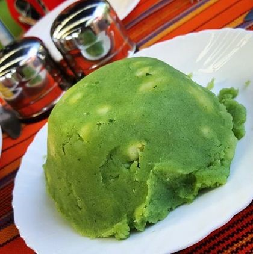

Mukimo (irio) Recipe

Description
Mukimo Irio is a meal whose origin is Central Kenya (Agikuyu community) but it’s being served in hotels across the country. If you have been wondering how to prepare this meal at home, here is a simple recipe to guide you through.
Ingredients;
1 kg Irish potatoes(select fresh for better taste)
2 handfuls of pumpkin leaves/spinach(soft and fresh)
3 cups of soft maize off the cob
A bunch of spring onions(finely chopped)
A spoonful of cooking oil
Salt to taste
Cooking procedure
- Carefully peel the potatoes and slice them into halves, wash them clean and set aside.
- Prepare the pumpkin leaves by removing the stalk and shred them into sizeable pieces. You can also blend them for richer colour. lf you are using spinach you just need to shred a little bit as well.
- Mix the pumpkin leaves, maize and potatoes in a Sufuria and add some water. Just enough for everything to cook well.
- Place the Sufuria or cooking pot on fire and let the mixture boil for 30 minutes under medium heat. Open and add a pinch of salt and let it cook for 10 more minutes.
- Reduce the heat and mash everything together using a wooden spoon until all blends in well. Remove from. Heat and set aside.
- In another larger pot/Sufuria, pour in the spring onions and cooking oil and place on fire. Mix until the onions turn golden brown then adjust the heat to minimal and add the Mashed mixture. Mix well.
- You can now remove from the heat and serve while
Mukimo can be served with beef stew, chicken stew and Kachumbari on the side. A cold fruit juice will also come in handy.